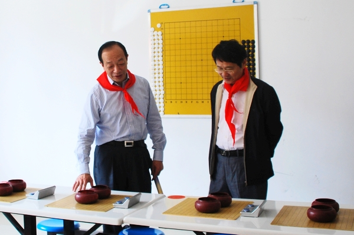
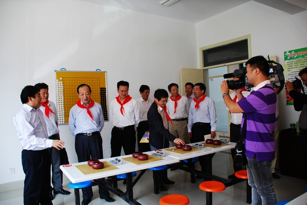
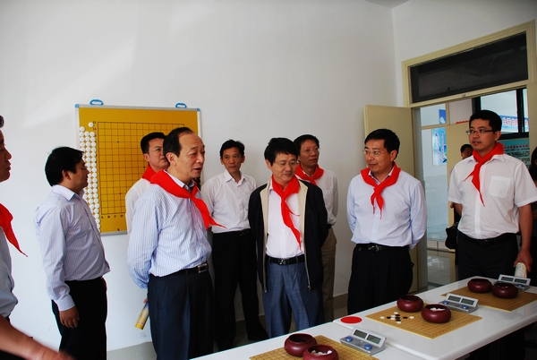

南通市领导视察港闸少儿五子棋活动基地
#1 南通市领导视察港闸少儿五子棋活动基地作者：有志青年 发表时间：2012-5-31 12:11:42

南通市副市长杨展里，南通市政 府副秘书长陆善平视察港闸区少儿五子棋活动中心


陪同视察的还有，南通市教育局局长郭毅浩、港闸区副区长张军、港闸区教育局局长李峰等
［此帖子已被 有志青年 在 2012-5-31 12:12:18 编辑过］
［ 陈国良 于 2012-5-31 12:24:11 时花20金币送鲜花一朵］
［ 小红眼镜 于 2012-5-31 12:28:41 时花20金币送鲜花一朵］
［ 满天星 于 2012-5-31 15:38:41 时花20金币送鲜花一朵］
［ 行云流水 于 2012-5-31 21:21:29 时奖励此帖[金币加 100 威望加1］
［ 行云流水 于 2012-5-31 21:22:11 时奖励此帖[金币加 100 威望加1］
#2 Re:南通市领导视察港闸少儿五子棋活动基地作者：白衣神童小剑魔 发表时间：2012-5-31 13:07:39
红领巾。。#3 Re:南通市领导视察港闸少儿五子棋活动基地作者：行云流水 发表时间：2012-5-31 21:22:50
南通青少年五子棋普及推广工作的方式方法值得学习。［ 黄药师 于 2012-5-31 21:50:27 时花20金币送鲜花一朵］